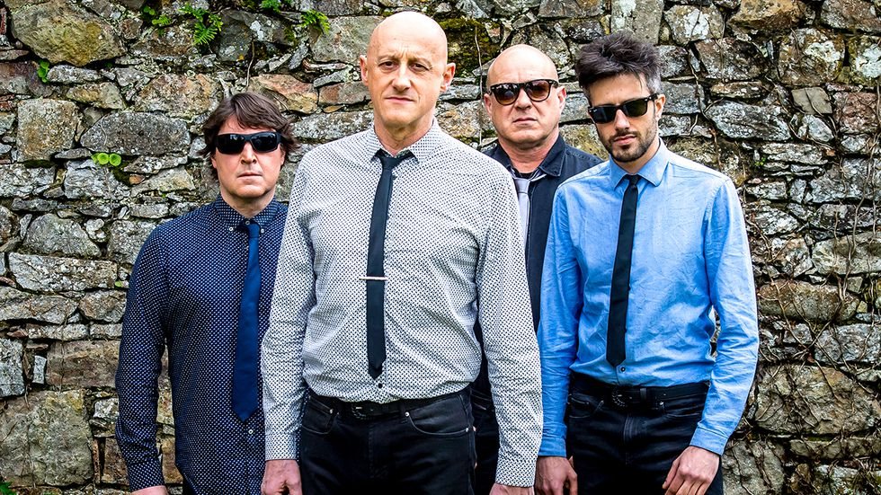

Ilegales es un grupo de música rock asturiano.
Ilegales nacieron a finales de la década de 1970 cuando los hermanos Jorge y Juan Carlos Martínez, junto a David Alonso, forman el trío Madson, que dos años más tarde cambiaría su nombre a Los Metálicos. Juan Carlos abandona posteriormente la banda, siendo reemplazado por Íñigo Ayestarán en el bajo. En ese momento se rebautizan como "Ilegales".
Componentes del grupo
|
| ||||||||||||||||||||||||||||||||||
Enlaces externos: https://www.youtube.com/watch?v=5aJGBe2V_9c
Vuelve atrás pulsando aquí